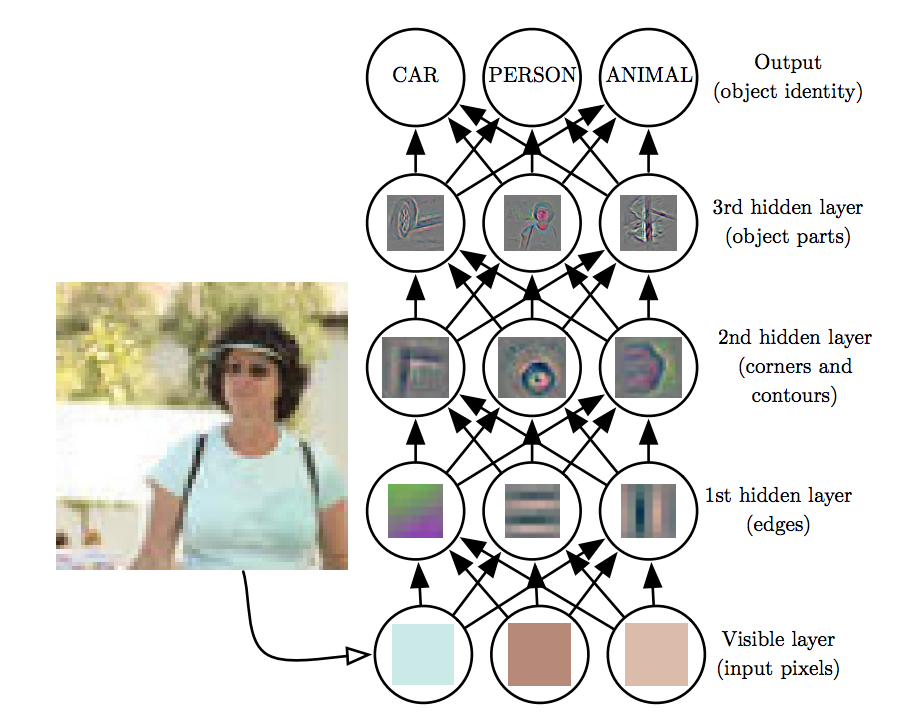
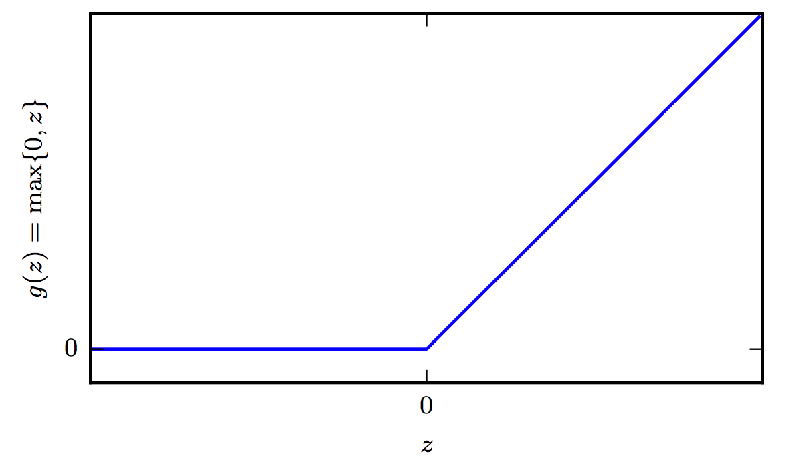

Deep Neural Networks
Contents
Deep Neural Networks¶
For a historical recap on neural networks see:
The Epistemology of Deep Learning - Yann LeCun
DNNs are the implementation of connectionism, the philosophy that calls for algorithms that perform function approximations to be constructed by an interconnection of elementary circuits called neurons. In this section, we provides some key points on the question of how the feed-forward neural networks are constructed. In subsequent sections we describe how they learn.
Architecture¶
Feedforward networks consist of elementary units that resemble the logistic regression architecture. These units are stacked up into layers.
There are multiple layers:
The input layer (\(\mathbf x\))
One or more hidden layers (\(\mathbf h\))
The output layer (\(\hat \mathbf y\))
Since the input to the network is trivial we focus on the hidden and output layers starting from the latter.
 Example DNN Architecture
Output Layer¶
The feedforward network provides a set of hidden features defined by
The role of the output layer is then to provide some additional transformation from the features to complete the task that the network must perform.
Sigmoid Units¶
These are used to predict the value of the binary variable \(y\). As evident in logistic regression, using a sigmoid output units combined with maximum likelihood provides a very strong response when we are confidently wrong. A sigmoid output unit is defined by
where the sigmoid activation function
Towards either end of the sigmoid function, the \(\sigma(a)\) values tend to respond much less to changes in a vanishing gradients. The neuron refuses to learn further or learns drastically slower that it could. What saves the situation is the log loss that undoes the exp of the sigmoid but this is the case for the final layers -this is the reason why normalization is usually used in each layer.
Softmax Units¶
Any time we wish to represent a probability distribution over a discrete variable with \(n\) possible values, we may use the softmax function. This can be seen as a generalization of the sigmoid function, which was used to represent a probability distribution over a binary variable. Softmax functions are most often used as the output of a classifier, to represent the probability distribution over \(n\) different classes. The softmax output unit is effectively a generalization of the sigmoid.
where \(i\) is over the number of inputs of the softmax function.
From a neuroscientific point of view, it is interesting to think of the softmax as a way to create a form of competition between the units that participate in it: the softmax outputs always sum to 1 so an increase in the value of one unit necessarily corresponds to a decrease in the value of others. This is analogous to the lateral inhibition that is believed to exist between nearby neurons in the cortex. At the extreme (when the difference between the maximal and the others is large in magnitude) it becomes a form of winner-take-all(one of the outputs is nearly 1, and the others are nearly 0).
The CE or the negative log-likelihood that originate from the application of the maximum likelihood principle offer in practice certain advantages during the learning of deep neural networks. Given that the gradient must be large enough to act as a guiding beam during SGD, we need to avoid situations that the output units result in flat responses (saturate). Since softmax involves exponentials, it saturates when for example the differences between inputs become extreme, the CE or negative log likelihood based loss helps as the log undoes the exponential terms.
ReLUs¶
The Rectified Linear Unit activation function is very inexpensive to compute compared to sigmoid and it offers the following benefit that has to do with sparsity: Imagine an MLP with random initialized weights to zero mean ( or normalized ). Almost 50% of the network yields 0 activation because of the characteristic of RELU. This means a fewer neurons are firing (sparse activation) making the the network lighter, more efficient that tends to generalize to validation data better. On the other hand for negative \(a\), the gradient can go towards 0 and the weights will not get adjusted during descent. As a testament to its utility, the incorporation of ReLU neurons into AlexNet was one of the factors behind its trampling of existing machine vision benchmarks in 2012 and shepherding in the era of deep learning. Since then more advanced activation functions have been proposed such as the leaky ReLU, the parametric ReLU, and the exponential linear unit—all three of which are derivations from the ReLU neuron.

References¶
We used a combination of material from Ian Goodfellow’s book chapter 6. Other good sources of information include CS331n and Nielsen’s tutorial treatment of the subject.
{{<tab "TF">}}
[Softmax](https://www.tensorflow.org/api_docs/python/tf/nn/softmax)
[ReLU](https://www.tensorflow.org/api_docs/python/tf/nn/relu)
{{</tab>}}